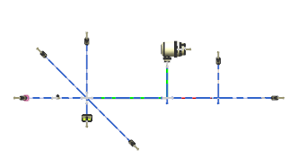

In the Formboard Layout dialog box, from the Main Run list, select Thickest.
In the Branches group, from the Branch Angles list, select Standard Angles.
点击确定。

The harness is ‘flattened’ onto a single plane.
|
Note |
Your harness layout may appear differently from the one illustrated above. In the following activities, you will learn how to orient the individual branches on the formboard. |